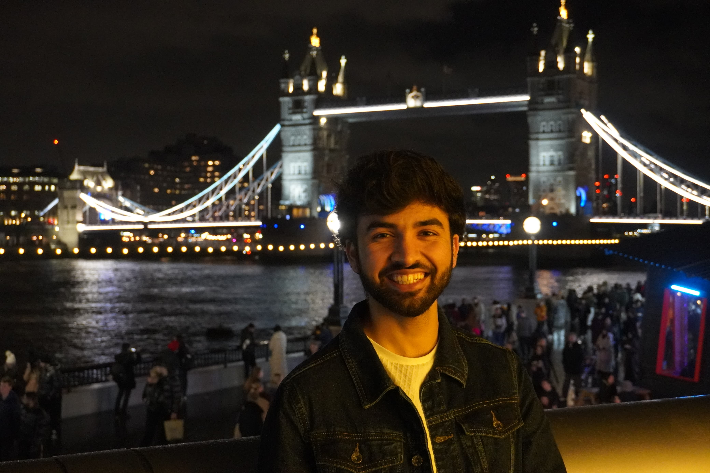

Adarsh Mirajkar

Summary
I am a student currently pursuing my MSc in Advanced Computer Science in University of Leicester, UK. I enjoy learning Web Development.
Education
- MSc in Advanced Computer Science - University of Leicester, UK.(2023-)
- Bachelor of Engineering in Computer Science - KLS Gogte Institute of Technology, India
Work Experience
Skills
- Web Development(Html, CSS & Javascript)
- Python
Awards & Certifications
- Data Science for Engineers - NPTEL
Other